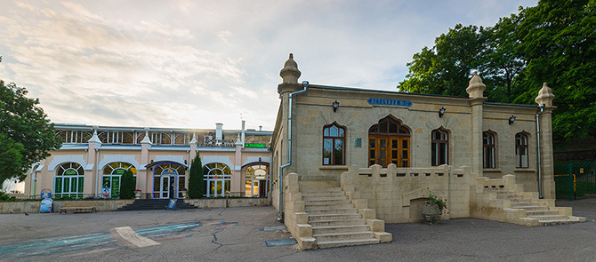
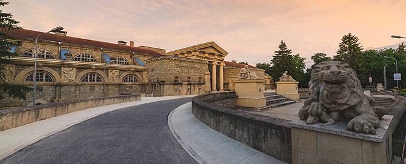

Как и некоторые другие города Кавказских Минеральный Вод город Ессентуки возник на месте казачьего поста в 1803 году. В тот год на реке Ессентук по приказу Александра I построили большой казачий пост для охраны и безопасности больных и отдыхающих. Пост назвали Ессентукским.
До сих пор нет единой версии о происхождении слова «Ессентуки». Вариантов много, и они имеют разные значения: «живой волос» из карачаевского языка, «девять знамен» — от калмыцкого, «обжитое место» — с адыгейского.
Первый источник минеральных вод под Ессентуками недалеко от реки Бугунты случайно обнаружил неизвестный казак. А в 1810 году к источнику приехал московский врач Фридрих-Йозеф Гааз. Он нашел здесь родник с водой сернистого вкуса, и рядом с ним еще два небольших источника с соленой водой. Доктор рекомендовал источники для лечения мочекаменной и желчекаменной болезней. Но Бугунтинские воды еще долго никто не использовал из-за того, что находились они в необжитых местах.
И только в 1823 году профессор Нелюбин вновь открыл минеральные источники близ Бугунты. Он насчитал 23 видимых ключа, разбил их на щелочные (№1-18) и серно-щелочные (№19-23) группы. Обнаруженный здесь серно-щелочной источник №23 оказался самым ценным, он не уступал по своим лечебным качествам зельтерской воде.
Доктор Нелюбин изменил эти убийственные нормы. Сейчас известно, что минеральную воду необходимо пить дозировано, соблюдая режим питания. В 1847 году был начат и первый розлив воды в бутылки, для реализации её за пределами КМВ. В том же году по указанию графа Воронцова был заложен Нижний лечебный парк и высажено 7500 тысяч деревьев. Долгое время парк носил название «Воронцовский».
Курорт вокруг источников появился не сразу, хотя уже в 1828 году Джузеппе Бернардацци разработал планы курортных строений для этого места. В 1831 году Ессентукский пост закрыли. Осталась одноименная станица, населенная казаками, которые и продолжили охранять эти территории. И только через восемь лет на источнике №23 построили деревянное здание с двумя ваннами, а еще через несколько лет ввели в употребление питьевые источники №4 и 17. В 1847 году «казачьи» минеральные источники перешли под управление Дирекции КМВ, которая и возвела у источника №17 каменную галерею.
От года к году территория курорта преображалась. Отдыхающие уже прогуливались по Нижнему парку и по саду на горе Щелочной, который потом назвали Верхним парком. Прогулочные маршруты вели в Голицинский Цветник с каменной лестницей, к Китайской беседке и Эоловой арфе. Лечебные ванны курортники принимали в первой в Ессентуках каменной купальне у источника №17. Со временем на курорте построили здание Ресторации, собственный железнодорожный вокзал и театральный павильон. В 1908 году по числу посетителей ессентукский курорт вышел на первое место в России. Перед Первой Мировой город уже сиял электрическими фонарями, а экипажи передвигались по мощенным дорогам. Тогда же открылись новое здание грязелечебницы, Торговая галерея и почтовое отделение.
Революция изменила облик этого места. Многие частные дачи и фешенебельные дома перестроили под санатории. К 1940 году ессентукский курорт получил всесоюзное значение. Его основной специализацией стало лечение болезней органов пищеварительной системы и обмена веществ.
Современный Ессентуки — город-курорт с развитой инфраструктурой. Здесь работают более 30 санаториев и пансионатов, среди которых есть три санатория, специализирующихся на лечении детей и подростков. В свободное время можно прогуляться до Большого озера или съездить на экскурсию на «Белый уголь» — старейшую промышленную ГЭС в России. В этом городе много мест для семейного отдыха, одно из них — поющих фонтан, расположенный на Театральной площади, где работает открытая сцена и проводятся фестивали авторской песни.